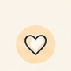
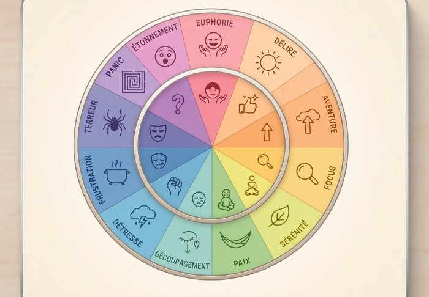

Des outils courts et concrets pour mieux comprendre ce que vous ressentez — pas un test, pas un diagnostic : juste de quoi y voir un peu plus clair, à votre rythme.

0 diagnostic, 0 étiquette
Mettre un mot précis sur ce qu'on ressent est souvent la première étape pour mieux le comprendre. Cliquez sur une émotion pour déc…
Découvrir →Cochez ce qui vous parle actuellement. Cette liste n'est pas un outil de mesure : elle sert à repérer des signaux qui, cu…
Découvrir →3 coloriages calmes à imprimer, pour souffler au calme ou avant un moment qui inquiète.
Découvrir →